jogos populares
 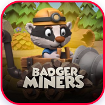
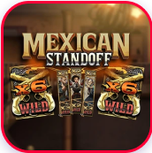
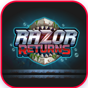
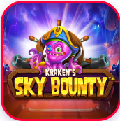
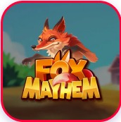
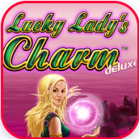
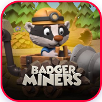
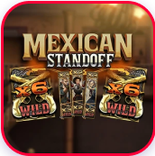
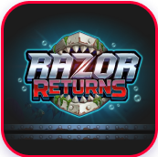
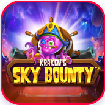
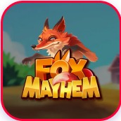
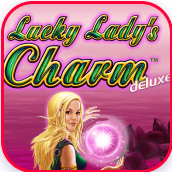
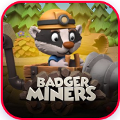
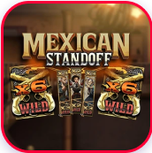
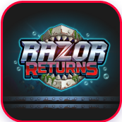
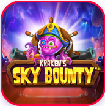
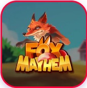
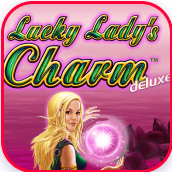
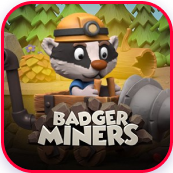
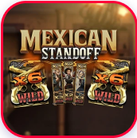
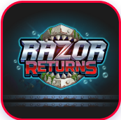
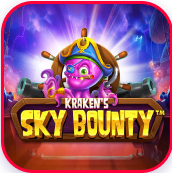
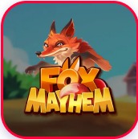
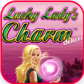
O que é um casino social?
Sim, normalmente é necessário registar-se para jogar num casino social. É gratuito e permite-lhe guardar o seu progresso, conversar com outros jogadores e participar em vários eventos e torneios.
Preciso de me registar para jogar num casino social?
Sim, normalmente é necessário registar-se para jogar num casino social. É gratuito e permite-lhe guardar o seu progresso, conversar com outros jogadores e participar em vários eventos e torneios.
Posso jogar a dinheiro num casino social?
Sim, normalmente é necessário registar-se para jogar num casino social. É gratuito e permite-lhe guardar o seu progresso, conversar com outros jogadores e participar em vários eventos e torneios.
Como é que obtenho moedas ou fichas de jogo?
Sim, normalmente é necessário registar-se para jogar num casino social. É gratuito e permite-lhe guardar o seu progresso, conversar com outros jogadores e participar em vários eventos e torneios.
Anna_1993
16.08.2023
O casino social é uma verdadeira magia! Posso divertir-me a jogar blackjack e slots sempre que quiser sem me preocupar com as finanças. A enorme seleção de jogos e os bónus diários tornam este lugar incrivelmente excitante.
MaxX
25.07.2023
Com os amigos, passamos muitas vezes as noites neste casino social. Criamos as nossas próprias salas de jogo e competimos uns com os outros. É um ótimo lugar para socializar e divertir-se!
support@topvirtgames.lat